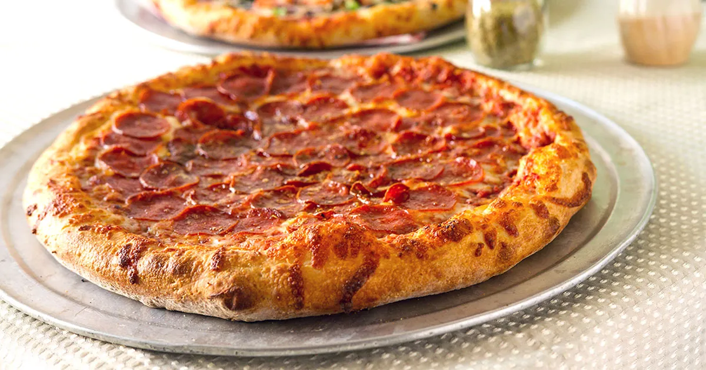

Homepage
Pizza

Description
New York pizza features thin, foldable slices with a crisp, chewy crust, simple tomato sauce, mozzarella, and various toppings. Its unique taste comes from high-gluten flour and NYC tap water.
Ingredients:
Dough:
- 3 1/2 cups (440g) high-gluten flour
- 1 1/2 cups (360ml) water (preferably NYC tap water)
- 1 tsp active dry yeast
- 1 1/2 tsp salt
- 1 tbsp olive oil
- 1 tsp sugar (optional)
Sauce:
- 1 can (28 oz/800g) crushed tomatoes (preferably San Marzano)
- 2 tbsp olive oil
- 1-2 garlic cloves, minced (optional)
- 1 tsp dried oregano
- 1 tsp dried basil
- 1/2 tsp salt
- 1 tsp sugar (optional, to balance acidity)
Steps:
- Preheat the oven
- Make the Dough
- Prepare the Sauce
- Assemble Pizza
- Oven